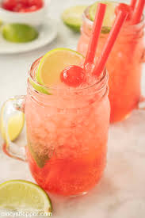

Sonic Cherry Limeade

Here is a recipe for a copycat version of Sonic's Cherry Limeade:
Ingredients
- 1/2 liter of Sprite
- 1/12 oz frozen limeade from concentrate
- 1 small jar of maraschino cherries
Instructions
- In a large pitcher, combine Sprite, frozen limeade and the entire jar of maraschino cherries (including the syrup).
- Mix slowly so your Sprite doesn't go flat.
- Pour over ice and add a wedge of lime (optional but awesome)
- Enjoy!
Back to home